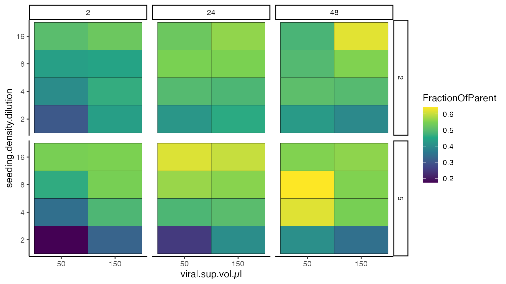

import data from fj workspaces
import_data_from_fj_workspaces.RmdInstall necessary packages in RStudio:
install.packages("devtools")
devtools::install_github("Close-your-eyes/fcexpr")
install.packages("tidyverse")
library(fcexpr)Many information are stored in flowjos wsp file which is actually an xml file. This includes gated event counts, statistics like MFI and meta data from the FCS files like keywords. The wsp file can be accessed without a flowjo dongle - you can open the it with in a text editor (e.g. BB Edit on a Mac) or read it with the XML2 package in R.
Based on the latter I wrote functions that extract information from a flowjo 10 wsp.It is very simple and works as follows. After you gated your populations, save the wsp and run the wsx_get_popstats function:
ps <- fcexpr::wsx_get_popstats(ws = "/Users/user/Documents/07-Oct-2021.wsp", return_stats = TRUE)
# also ps <- wsx_get_popstats(ws = "/Users/user/Documents/07-Oct-2021.wsp") is possiblews is the file path (url) to a wsp on your disk. The prefix fcexpr:: specifies the package a function comes from. With return_stats = TRUE a list of length 2 is returned.
length(ps)
#> [1] 2Index 1 holds a data frame with gated event counts. Index 2 holds, if calculated in flowjo, statistics like MFI. If not, then index 2 is NULL.
names(ps)
#> [1] "counts" "stats"
# columns names
names(ps[[1]])
#> [1] "FileName" "PopulationFullPath" "Parent"
#> [4] "Population" "Count" "ParentCount"
#> [7] "FractionOfParent" "xDim" "yDim"
#> [10] "eventsInside" "FilePath" "group"
#> [13] "ws"
names(ps[[2]])
#> [1] "FileName" "PopulationFullPath" "statistic"
#> [4] "channel" "value" "FilePath"You may write the list-content to individual variables. This will allow to inspect the data frames manually in R studio.
ps_counts <- ps[["counts"]] # access by name
ps_stats <- ps[[2]] # access by indexMost likely additional information (meta data) are necessary to plot the data or analyze them statistically. One has to attach information about every fcs files like if it was a full stain, FMO or isotype control; or from which patient the sample material was derived; or what disease the patient suffered from; sex or age. This may be achieved by joining a sampledescription to ps_counts or ps_stats. You may create such table manually or have it created in a standardized, automized fashion with fcexpr::sync_sampldescription (see another vignette for the whole concept). Alternatively, your wsp may hold annotations in the form of keywords. These can be extracted as well:
keys <- fcexpr::wsx_get_keywords(ws)This returns a list of data frames. One index for every FCS file in the wsp. In this example there are 48 FCS files. The data frame at index 1 (first FCS file) has 211 rows, one for each keyword, and 2 columns, providing the name of the keyword and its value.
To join the keywords to ps_counts or ps_stats we have to make it a data.frame first.
# make it a data.frame
keys_df <- do.call(rbind, keys) # base R
keys_df <- dplyr::bind_rows(keys) # dplyr-style
# create a FileName-column
keys_df$FileName <- rep(names(keys), sapply(keys,nrow))
# select relevant keywords
# example: Cytometer name ($CYT) and Operator ($OP)
keys_df <- keys_df[which(keys_df$name %in% c("$CYT", "$OP")),] # base R
keys_df <- dplyr::filter(keys_df, name %in% c("$CYT", "$OP")) # dplyr-style
# make it a wider data.frame (pivot_wider and pivot_longer are a bit difficult to get your head around but are very powerful)
keys_df <- tidyr::pivot_wider(keys_df, names_from = name, values_from = value)
nrow(keys_df)
#> [1] 48
names(keys_df)
#> [1] "FileName" "$CYT" "$OP"Now we have one data frame of two keywords for every FCS file. Join these meta data to the phenotype data. CYT and OP are just two examples but are not very informative. Hence, we also join another table (variable sd) with more relevant meta data. In this case a transduction was established and putative relevant factors that influence the transduction efficiency have been varied (see the column names of sd below).
ps_counts2 <- merge(ps_counts, keys_df) # base R
ps_counts2 <- dplyr::left_join(ps_counts, keys_df) # dplyr-style
#> Joining, by = "FileName"
# sd is a sampledescription data.frame
names(sd)
#> [1] "FileName" "identity"
#> [3] "Exp.part" "viral.sup.vol.µl"
#> [5] "incubation.time.h" "polybrene.ug.ml"
#> [7] "EGF.ng.ml" "FCS.percent"
#> [9] "seeding.density.dilution"
ps_counts2 <- dplyr::left_join(ps_counts2, sd)
#> Joining, by = "FileName"ps_counts2 which now holds meta data and phenotype data may be saved to excel for further processing.
openxlsx::write.xlsx(ps_counts2, "/Users/user/Documents/7-Oct-2021.xlsx")It is preferable though to tidy up, filter, select and plot in R. This can be done with base R or with functions from the tidyverse. It requires a little bit of practice. For a number of cases though there are a few standard procedures that you may learn quickly. Some arbitrary operations and plots are shown below.
# filter for the GFP+ population only
unique(ps_counts2$Population)
#> [1] "root" "RPTECs" "DAPI-" "GFP+"
ps_counts2_plot <-
ps_counts2 %>%
dplyr::filter(Population == "GFP+")
unique(ps_counts2_plot$Population)
#> [1] "GFP+"
# plot the frequency of GFP+ events with respect to the parent gate
ggplot(ps_counts2_plot, aes(x = incubation.time.h, y = FractionOfParent)) +
geom_jitter(width = 0.1) +
theme_bw() +
ylab("% GFP+ in DAPI-")
The incubation time of viral supernatant (x-axis) seems to play a role for the transduction rate (y-axis). But there are more factors which can be visualized in another plot.
ggplot(ps_counts2_plot, aes(x = viral.sup.vol.µl, y = seeding.density.dilution, fill = FractionOfParent)) +
geom_tile(color = "black") +
theme_classic() +
scale_fill_viridis_c() +
facet_grid(cols = vars(incubation.time.h), rows = vars(FCS.percent))